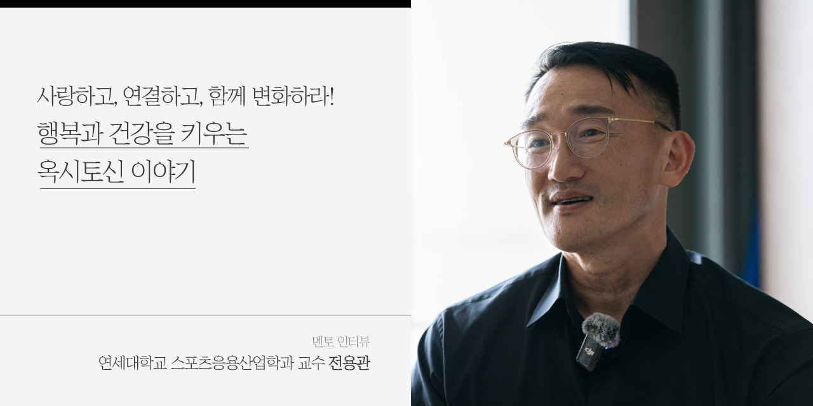
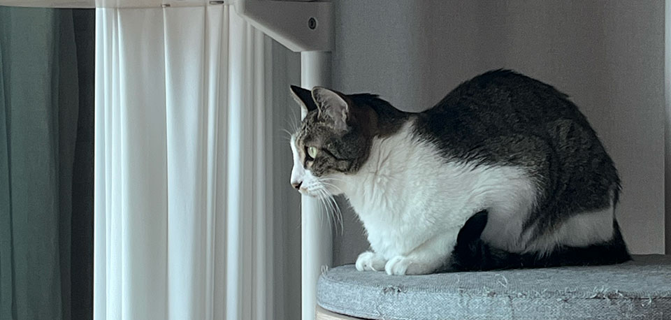
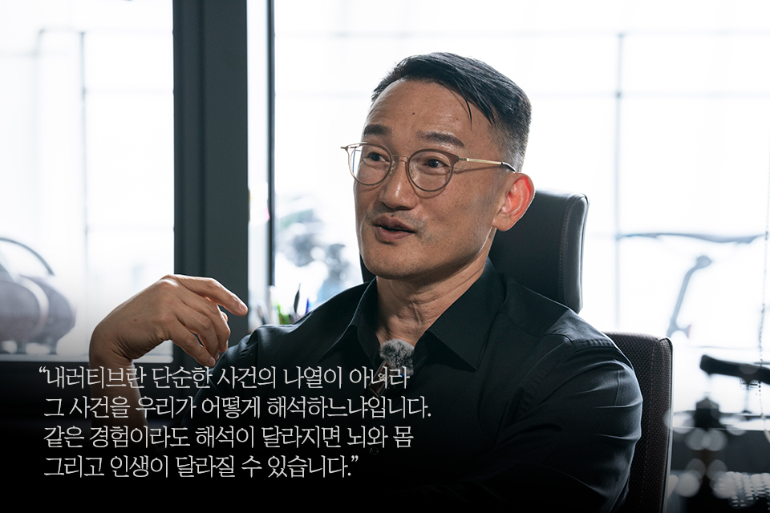

우리가 매일 마주하는 평범한 순간들이 사실은 삶의 건강과 행복을
좌우하는 중요한 연결고리가 된다면 어떨까. 일상 속 ‘작은 실천’과
‘관계의 힘’에 주목하는 전용관 교수는, ‘건강한 생활 습관을 통한
건강한 대한민국 만들기’라는 비전 아래 수십 년간 몸과 마음의
회복력을 연구해왔다. 그의 책 『옥시토신 이야기』에 따르면,
대화·스킨십·운동 같은 일상이 우리 뇌와 몸 전체에 상상 이상의
긍정적 변화를 가져온다. 이런 작은 행동들은 신체의 건강에만 그치지
않고, 정서적 안정과 함께 사회적 신뢰와 공동체의 치유로 자연스럽게
이어진다.
여럿이 함께 노래를 부르거나 가슴 뛰는 스포츠 경기를 한마음으로
응원할 때, 어느새 모두가 하나가 된 듯한 깊은 유대감을 느껴본 적이
있는가. 그 비밀은 바로 옥시토신에 있다. 이처럼 사람과 사람이 만나
교감하고 함께 몰입하는 순간, 우리 뇌와 몸에서는 특별한 화학 반응이
일어나 건강과 행복을 잇는 깊은 연결고리가 만들어진다. 흔히 ‘사랑의
호르몬’이라 불리는 옥시토신은 우리 몸과 마음을 이어주는 강력한
매개체다. 반복되는 일상에서 우리는 연결과 치유의 힘을 발견하고,
이를 실천함으로써 더 풍요롭고 건강한 삶으로 나아갈 수 있다. 몸을
움직이고, 마음을 나누고, 따뜻하게 안아주는 것. 결국, 우리가
건강하고 행복하게 살아가는 데 필요한 것은 그리 복잡하지 않다. 오늘
하루, 가볍게 몸을 움직여보고 따뜻한 말 한마디를 건네보는 건
어떨까? 사랑, 건강, 그리고 삶의 활력이 그 안에서 조금씩 자라날지도
모른다.

Q1. 안녕하세요 교수님! 인터뷰에 앞서 <석유사랑> 독자 여러분께 간단한 인사 말씀 부탁드립니다.
안녕하세요. 연세대학교 스포츠응용산업학과 전용관 교수입니다. 이렇게 <석유사랑> 독자 여러분을 만나 뵙게 되어 반갑습니다. 오늘 인터뷰에서는 몸과 마음의 건강에 대해 여러분이 궁금해하실 만한 내용에 최선을 다해 답변드리겠습니다.
Q2. 교수님의 이력을 보면 체육교육과 졸업, 운동의학 및 특수체육 박사, 하버드대학교 의과대학 연구원, 스포츠응용산업학과 교수, 암예방센터 교수까지, 정말 다양한 분야를 아우르고 계시더라고요. 얼핏 보면 서로 조금씩 달라 보이는데, 교수님께 이 연결고리의 중심은 무엇인가요?
제가 연구와 교육에서 가지고 있는 비전은 ‘건강한 생활 습관을 통한 건강한 대한민국 만들기’입니다. 운동이 왜 좋은지, 어떤 질환이나 정신 건강에 어떻게 도움이 되는지를 과학적으로 검증하고, 그 결과를 바탕으로 실제로 적용 가능한 프로그램을 개발하고 보급하는 것이 저희 연구실의 흐름입니다. 이런 연구를 20년 넘게 이어오다 보니, 연구 대상도 자연스럽게 다양해졌습니다. 장애인, 노인, 암 생존자, 수술 직후의 환자, 치매·파킨슨 환자 등 여러 건강 조건을 가진 사람들과 그렇지 않은 사람들까지 폭넓게 연구해왔어요. 지금은 그동안 축적된 데이터를 바탕으로, 보다 많은 사람들에게 이 내용을 알리고 실천을 확산시키는 일에 집중하고 있습니다.

2025 살루토제네시스 심포지엄에서 발표 중인 전용관 교수Q3. 교수님이 쓰신 책 『너희가 사랑을 아느냐?』, 『옥시토신 이야기』의 제목이 인상 깊습니다. 두 책 모두 ‘사랑’과 밀접한 관련이 있어 보이는데요. 이 책들을 쓰시게 된 계기는 무엇이나요?
연세대학교에 부임한 뒤, 극단적인 선택을 하는 학생들의 이야기를 듣고 큰 충격을 받았습니다. 저는 원래 당뇨병 쪽 연구를 깊이 있게 하던 사람인데요. 단순히 질병을 예방하는 운동 처방을 넘어서, 이들의 마음에도 도움이 되는 무언가를 해야겠다는 사명감이 생겼습니다. 그래서 1학년 학생을 대상으로 <너희가 사랑을 아느냐?>라는 제목의 수업을 열고, 7년 정도 운영했지요. 그 내용을 더 많은 이에게 전하고자 책으로 펴냈습니다. 이어서 『옥시토신 이야기』는 ‘사람과 사람의 연결’이 건강에 미치는 영향에 주목하면서 쓰게 된 책입니다. 운동이나 식습관의 영향만큼 사회적 관계가 사망 위험을 낮춘다는 연구 결과가 매우 놀라웠고, 그 의학적 기반인 ‘옥시토신’의 힘을 널리 알리고 싶었습니다.
Q4. 옥시토신을 연구하시면서 특히 인상 깊거나 감동적인 순간이 있었을까요?
전 세계적으로도 옥시토신이라는 하나의 호르몬을 처음부터 끝까지 다룬 책은 제 책 『옥시토신 이야기』밖에 없습니다. 1,000편이 넘는 논문을 직접 읽고 정리하며 아침마다 이 연구실에서 집필했는데, 알아갈수록 정말 흥미롭고 감동적이었습니다. 무엇보다 책을 쓰면서 제 삶에도 큰 변화가 있었습니다. 예를 들어, 스킨십이나 눈 맞춤, 함께 식사하는 행동만으로도 옥시토신 수치가 올라간다는 걸 알고 나서, 아내와의 관계를 더 애틋하게 바라보게 되었죠. 일상의 작은 실천이 친밀감을 회복하는 열쇠라는 걸 직접 체감하는 순간이었습니다.
Q5. 옥시토신을 높이는 것도 결국 건강한 몸과 마음으로 살아가기 위한 일이겠지요. 교수님께서 생각하시는 ‘건강한 삶’이란 어떤 삶인가요?
제가 생각하는 건강한 삶은 서로 존중하는 삶입니다. 옥시토신은 친밀감뿐 아니라 상호 존중을 돕는 호르몬이기도 합니다. 칭찬, 배려, 따뜻한 말, 함께하는 식사 같은 사소한 행동들이 모두 존중의 표현이며, 이런 존중이 옥시토신을 높이는데요. 그렇게 되면 서로에게만 친절해지는 것이 아니라 그 사람이 집에서, 또다른 곳에서 친절을 베풀 수 있으니 사회 전반으로 퍼질 수 있지요. 흥미로운 실험 결과, 옥시토신을 흡입하면 자신 앞에 있는 사람에 대한 호감도가 높아지는 것으로 나타났습니다. 존중을 통한 다정함이 있는 사회가 건강한 사회가 아닐까, 그리고 그걸 가능하게 만드는 호르몬이 옥시토신이 아닐까 생각합니다.
Q6. 옥시토신이 흔히 ‘사랑의 호르몬’이라고 불리잖아요. 옥시토신이란 어떤 호르몬이며, 구체적으로 우리 몸과 마음에 어떤 영향을 주나요?
옥시토신은 뇌하수체 후엽에서 분비되는 호르몬으로, 뇌와 여러 장기에 존재하는 수용체에 작용해 긍정적인 효과를 냅니다. 뇌에서는 중독, 행복 등 다양한 감정을 느끼는 부위에도 수용체가 있어서 옥시토신 수치가 올라가면 내가 더 긍정적인 사고를 갖게 됩니다. 암세포 성장 억제와 심장 보호 효과도 있습니다. 또한 식욕을 줄여주며, 스트레스가 유발하는 과민성대장증후군 증상을 개선하기도 해요. 이 외에도 치매 예방과 뇌 기능 향상, 자폐 증상 개선에 도움을 주어, 뇌부터 장까지 전신 건강에 광범위하게 긍정적인 영향을 미치는 거죠. 이렇게 이야기하면, 많은 분들이 ‘그럼 옥시토신이 만병통치약인가요?’라고 물으시는데, 저는 자신 있게 ‘네, 그렇습니다. 옥시토신은 만병통치약입니다.’라고 답합니다.
Q7. 바쁜 일상 속에서도 옥시토신을 자연스럽게 높일 수 있는 방법이 있을까요? 어린 자녀가 있는 가족부터 1인 가구까지, 각자 적용해볼 수 있는 방법이 다양할 것 같아요.
제 책을 읽고 연락을 주시는 분들이 많은데, 가장 많이 듣는 이야기 중 하나는 ‘자녀를 자주 안아주기 시작했다’는 점입니다. 처음에는 아이가 불편해했지만, 점차 부모와 자녀 간 유대감이 깊어졌다고 합니다. 또 한 분은 평생 엄마 손을 잡아본 적 없던 아들이 성인이 되어 어머니 손을 잡고 고마움을 표현하는 순간 서로 울컥했다고 하죠. 이런 작은 행동들이 사실은 매우 중요합니다. 옥시토신 분비는 아이의 집중력과 학습 능력을 높여줍니다. 반대로 잔소리나 다그침은 옥시토신을 떨어뜨리고 스트레스 호르몬을 올려 아이의 뇌 기능을 저하시키니, 안아주거나 칭찬, 고마움의 표현이 훨씬 긍정적입니다. 이런 작은 행동이 반복되고 일상화되면 아이의 뇌 구조와 연결망이 긍정적으로 변화할 수 있습니다.

1인 가구 분들께는 사회적 활동을 많이 하실 것을 권합니다. 최근 활성화된 러닝 모임, 배드민턴 클럽 등 커뮤니티 활동에 참여하는 것도 추천합니다. 예를 들어, 유방암 환자 중 일주일에 2시간 이상 친구들과 교류하는 사람은, 30분 이하로 만나는 사람에 비해 재발 위험이 80%가 낮습니다. 고립된 상태보다는 사람들을 만나는 시간을 내 일상 안에 들어오게 하는 것이 좋지요. 또 하나는 꼭 직접 만나지 않아도 소중한 사람에게 전화해 안부를 묻고 목소리를 듣는 작은 노력도 큰 효과가 있습니다. 저도 책을 집필할 때, 고마웠던 분들이 떠올라서 그분들께 감사의 마음을 담아 편지를 보낸 적이 있는데요. 쓰면서 저도 눈물이 났고, 받으시는 분들에게도 마음이 전해졌을 거라 생각합니다. 꼭 직접 만나지 않아도 이렇게 마음을 전할 수 있고, 그런 마음이 계기가 되어 더 만나게 되는 것 같습니다.
Q8. 편지를 써보는 행위 자체가 나의 이야기와 우리의 관계를 돌아보며 내러티브를 만들어가는 일이라는 생각이 듭니다.
내러티브란 단순한 사건의 나열이 아니라 그 사건을 우리가 어떻게 해석하느냐입니다. 같은 경험이라도 해석이 달라지면 뇌와 몸 그리고 인생이 달라질 수 있습니다. 예를 들어, 노동자들이 자신의 신체 활동을 ‘운동’으로 인식하자, 혈압이 내려가고 체중이 줄어드는 변화가 나타났습니다. 그동안 노동으로 여겼던 움직임을 운동으로 받아들이는 순간, 실제로 운동이 되는 거예요. 삶은 결국 해석입니다. 해석하는 능력을 가진 사람이 삶을 주도적으로 살아가는데, 알프레드 아들러는 이를 ‘창조적 자아’라 불렀죠. 창조적 자아를 발전시켜야 내 삶에 일어나는 사건들을 더 의미 있게 해석하게 되고, 그것이 나아갈 디딤돌이 됩니다. 저는 이 ‘창조적 자아’에 큰 영향을 주는 게 옥시토신이라고 생각합니다. 이 내용은 『옥시토신 이야기』 마지막에 나오는데, 다음 책에서 더 깊이 다뤄볼 계획입니다.

Q9. 혼자 하는 운동도 좋지만, 함께 뛰고 땀 흘리는 운동이 더 긍정적이라는 말이 있는데요. ‘함께 운동하기’는 옥시토신 분비와 어떤 연관이 있나요?
사람마다 차이는 있지만, 함께 운동하면 더 즐겁고 운동의 양과 질이 높아집니다. 혼자라면 1km만 뛰고 끝낼 운동도, 누군가와 함께라면 2km, 3km까지 달리게 되는 경우가 많죠. 이렇게 운동 자체의 퀄리티가 올라가는 동시에, 사회적 활동을 통해 얻는 건강 증진 효과도 함께 나타납니다. 운동 후 나누는 인사나 하이파이브처럼 가벼운 접촉과 소통은 옥시토신 분비를 촉진시키고, 누군가 나를 기다린다는 생각은 꾸준한 운동의 동기가 되기도 하죠. 물론 함께 하는 운동이 더 효과적일 수 있지만, 억지로 스트레스를 받고 포기하게 된다면 오히려 역효과일 수 있습니다. 무엇보다 중요한 건 혼자라도 꾸준히 운동을 이어가는 거예요.
Q10. 한국석유공사에서도 사원들이 함께 스포츠 경기를 단체 관람하곤 합니다. 모두가 한마음으로 열정적으로 응원하는 그 공동의 경험이 좋은 영향을 줄 수 있겠다는 생각을 하게 됩니다.
정말 좋은 경험이라고 할 수 있습니다. 예를 들면 이런 겁니다. 노래를 부를 때 독창을 하면 스트레스 호르몬인 코르티솔은 줄어들지만, 옥시토신은 크게 증가하지 않아요. 그런데 합창을 하면 옥시토신 분비가 활발해집니다. 또 상대방의 동작을 내가 따라 하거나, 여러 명이 동시에 같은 동작을 맞춰서 움직일 때도 옥시토신이 분비돼요. 스포츠 응원도 마찬가지예요. 함께 같은 응원가를 부르거나 응원 동작을 반복하는 경험이 구성원 간의 유대감을 확 높여줍니다. 좋은 리더십이란, 이렇게 함께 몰입하고 연결될 수 있는 순간들을 자주 만들어주는 것이라고 생각해요.
Q11. 장시간 앉아서 일하는 직장인에게 추천하고 싶은 운동이 있다면 무엇일까요?
재미있는 실험이 하나 있었는데요. 당뇨 환자들을 대상으로, 매 30분마다 잠깐씩 일어나 기지개만 켜는 습관이 혈당 조절에 어떤 영향을 주는지 살펴본 거예요. 30분 걷는 것만이 운동이 아니라, 이렇게 짧은 ‘간헐적 일어섬’도 혈당 수치에 분명한 차이를 만들었습니다.

Q12. 운동이 정서 건강에 긍정적인 영향을 준다는 건 이제 널리 알려진 사실인데요. 구체적으로 뇌와 마음에는 어떤 방식으로 작용하나요?
우선, 운동을 하면 뇌로 가는 혈류량이 증가해 노폐물 제거가 촉진되고, 에너지 공급도 원활해집니다. 이로 인해 뇌 기능이 활성화되죠. 또한, 시냅스라고 하는 뇌 세포 가지치기가 활발해져 신경 연결망이 확장되고, 도파민이나 노르에피네프린 같은 신경전달물질 분비가 바로 증가해서 집중력이 좋아집니다. 유산소 운동은 미토콘드리아 기능을 활성화시켜 에너지 생산을 돕고, 이는 신경 전달, 시냅스 형성, 노폐물 배출 등 모든 뇌 활동의 기반이 됩니다. 마지막으로, 운동은 새로운 신경세포 생성, 즉 뇌 가소성을 촉진시켜 뇌를 장기적으로 더 건강하게 만듭니다. 정리하자면, 운동은 뇌에 가장 효과적인 영양제인 셈입니다.
Q13. 다양한 분야를 넘나들며 연구를 해 오신 교수님의 통합적 관점이 인상 깊습니다. 연구 여정에서 얻은 인사이트 중 나누고 싶은 메시지, <석유사랑> 독자 분들께 전하고 싶은 이야기가 있다면 나눠주세요.
저는 인생이란 결국 ‘해석’이라고 생각합니다. 같은 일이라도 어떻게 해석하느냐에 따라 그것이 시련이 되기도 하고 성장의 계기가 되기도 하죠. 자신의 삶을 주도적으로 해석해나가는 창조적 자아를 키우는 것이 우리가 지향해야 할 삶의 방향이 아닐까 생각합니다.